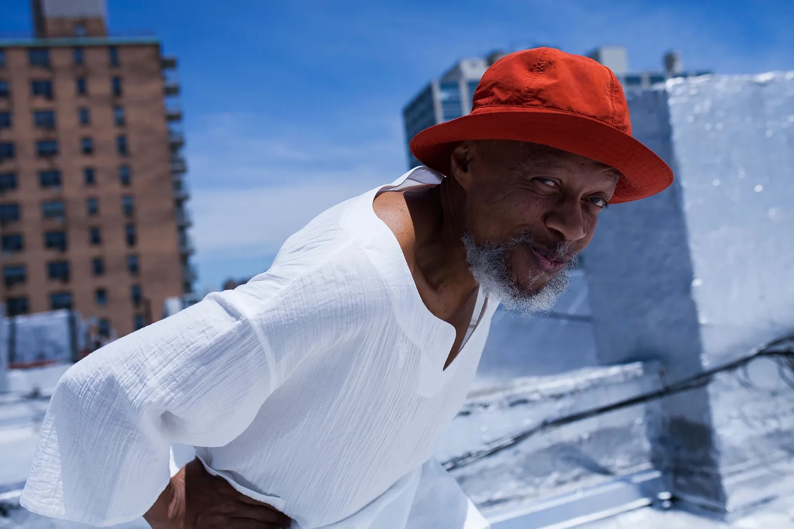
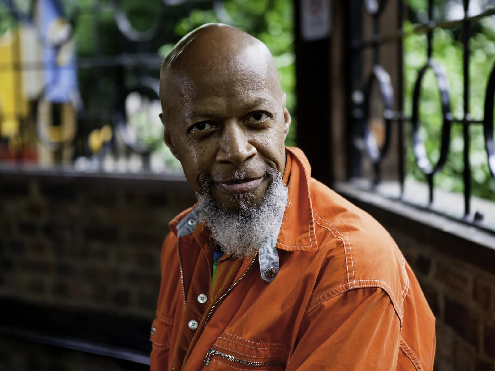
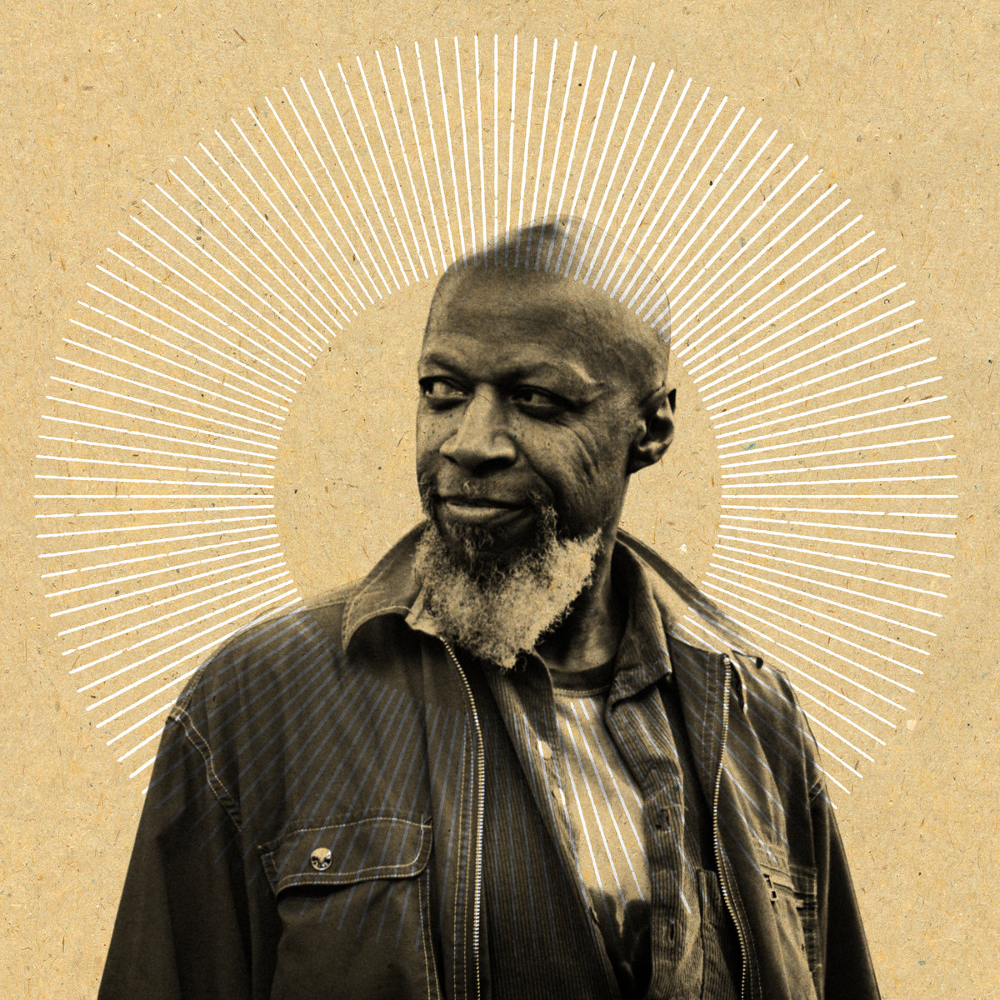
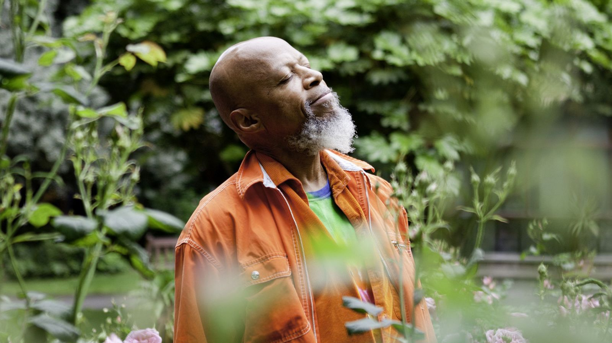
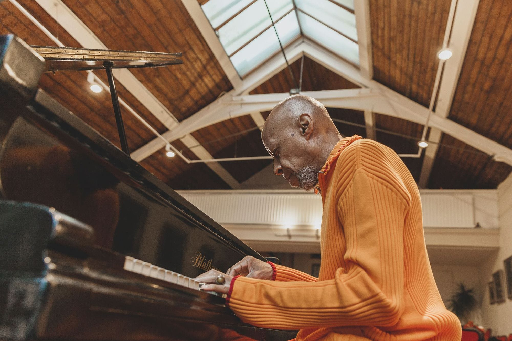

LARAAJI The Orange Musician
    About the Philly Native's Love For the Color Orange, At the root of Laraaji’s fascination is a spiritual practice that deepened over time. In the mid-’70s, he started to devote more time to studying Eastern philosophy and meditation, in particular. “My questions about life started to get deeper and I started to pay more attention to anything of a spiritual nature,” he says. Back then, he was already in the habit of wearing all white, which he considered a sanctified color. Then one day in 1979, Laraaji was enjoying the $5 all-you-can-eat deal at a Hare Krishna restaurant in Midtown when the orange garments in the adjacent store caught his eye. “One day I said, ‘Gosh, you know, I feel like experimenting with this color. It’s such an unusual thing to do, to wear all orange.’ ” he says. “So, I just bought a few pieces of orange clothes and started to experiment in combination with the white that I was wearing.” Ultimately, his monochromatic uniform crystallized after a teacher at an ashram in upstate New York suggested he fast-track his spiritual trajectory by sticking to orange, the color of fire and transformation. “[To] put the sunset on your old way of knowing self and the sunrise of the new way of knowing self, as a cosmic being,” Laraaji explains.
Swamis, or Hindu spiritual teachers, also don the hue, but for Laraaji, it became a long-term, ever-changing pursuit of a color that he calls “highly stimulating.” “It’s a cheerful color; it’s energizing; it’s a color that drives the energy toward creativity and self-realization,” he says. He adds that he focuses less on the color of his clothes than how that color catches the sun’s rays, which is appropriate given that Laraaji, his self-assigned name, celebrates the sun as a divine entity in service to the solar system.
Credits to Rachel Hahn | Media By Vogue Magazine